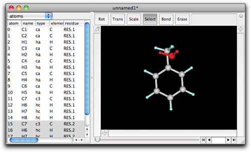
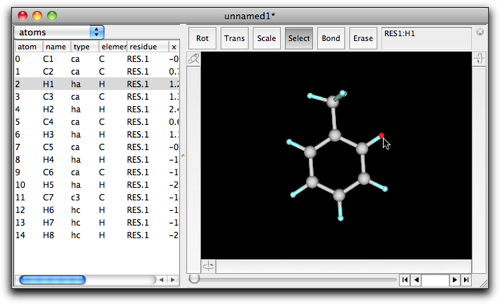
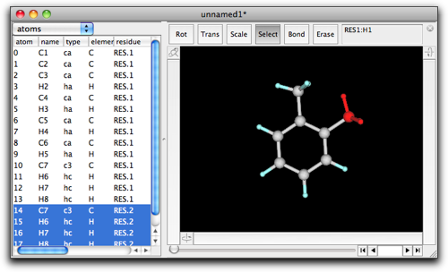
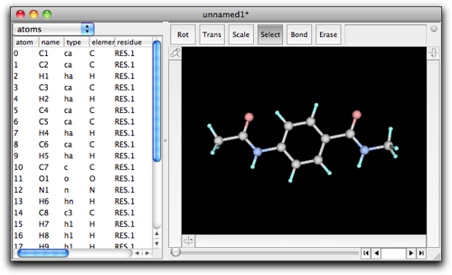
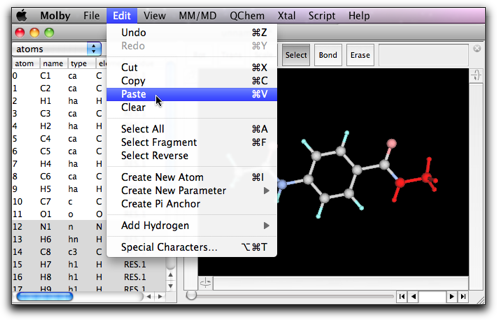
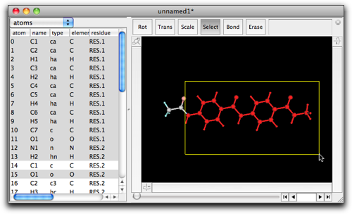
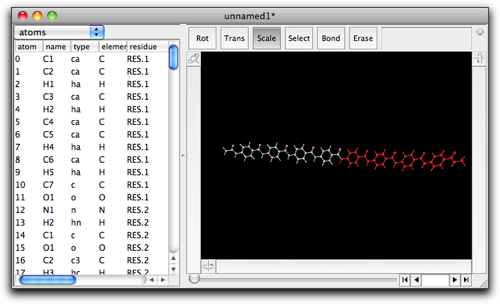

Step Three: Edit a Molecule: Cut/Copy/Paste
Like any other decent "editing" applications, Molby has a capability of cut/copy/paste by use of a clipboard. These functions (especially copy and paste) are also quite useful for building complex molecules.
We start from the toluene molecule again. Select the methyl group and do copy.

Unselect the methyl group, and do paste. Another methyl group appears, with no connection to the existing atoms. This is how "paste" works when nothing is selected beforehand.

Now we will see what happens when something is selected before pasting. As described above, start with the toluene molecule, select the methyl group, and copy it. Unselect the methyl group, and this time select the hydrogen atom that is "ortho" to the methyl group.

Do paste. The selected hydrogen atom is replaced with the pasted methyl group. Note that a new bond is created between the pasted methyl carbon and the ortho carbon, with an acceptable bond length and angles.
The dihedral angle may not be acceptable. In that case, you can rotate the pasted fragment by use of the left rotation bar until the dihedral angle looks good.

This "select and paste" technique is very useful for building large molecules. Suppose we want to build an oligobenzamide.

Create a "monomer", i.e. N-methyl-4-acetamidobenzamide. This is done by (1) create a benzene, (2) select H1, double-click, and enter "CONHCH3", (3) select H4, double-click, and enter "NHCOCH3". After entering each formula, you need to rotate the fragment to make the dihedral angle appropriate.

Select the whole molecule except for the COCH3 group at the left. Do copy.

Select the NHCH3 group at the right. Do paste.

A new amide bond is created and the dimer is formed.

Select "Fit to Screen" from the "Show" menu, to make the whole molecule visible.

Repeat these procedures to make the tetramer.



Make one more iteration to make the octamer.
